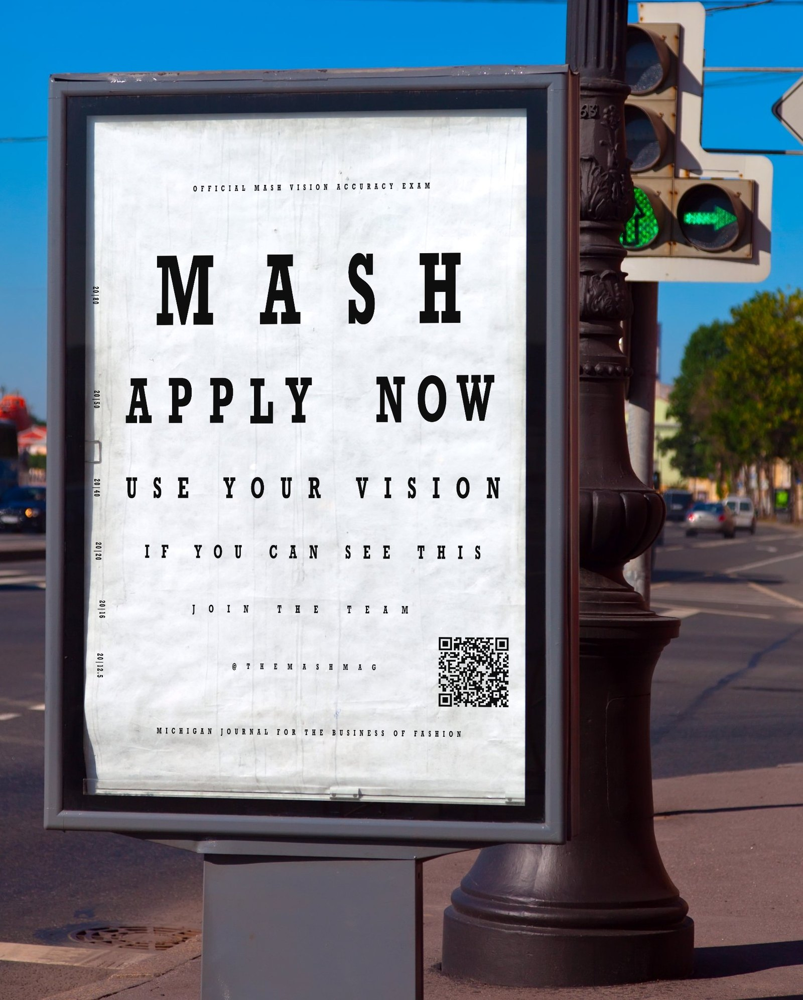
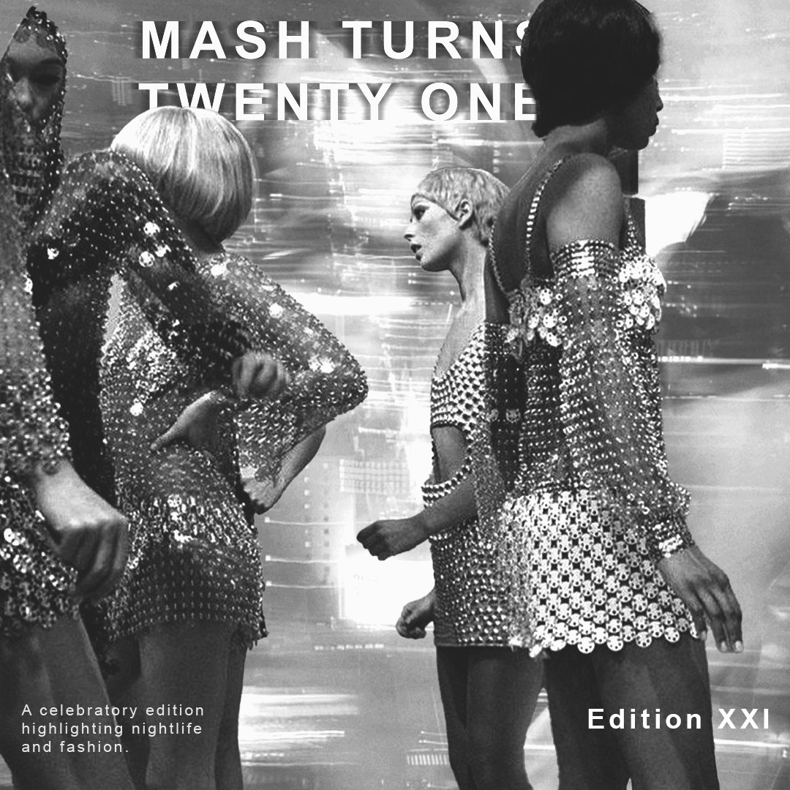
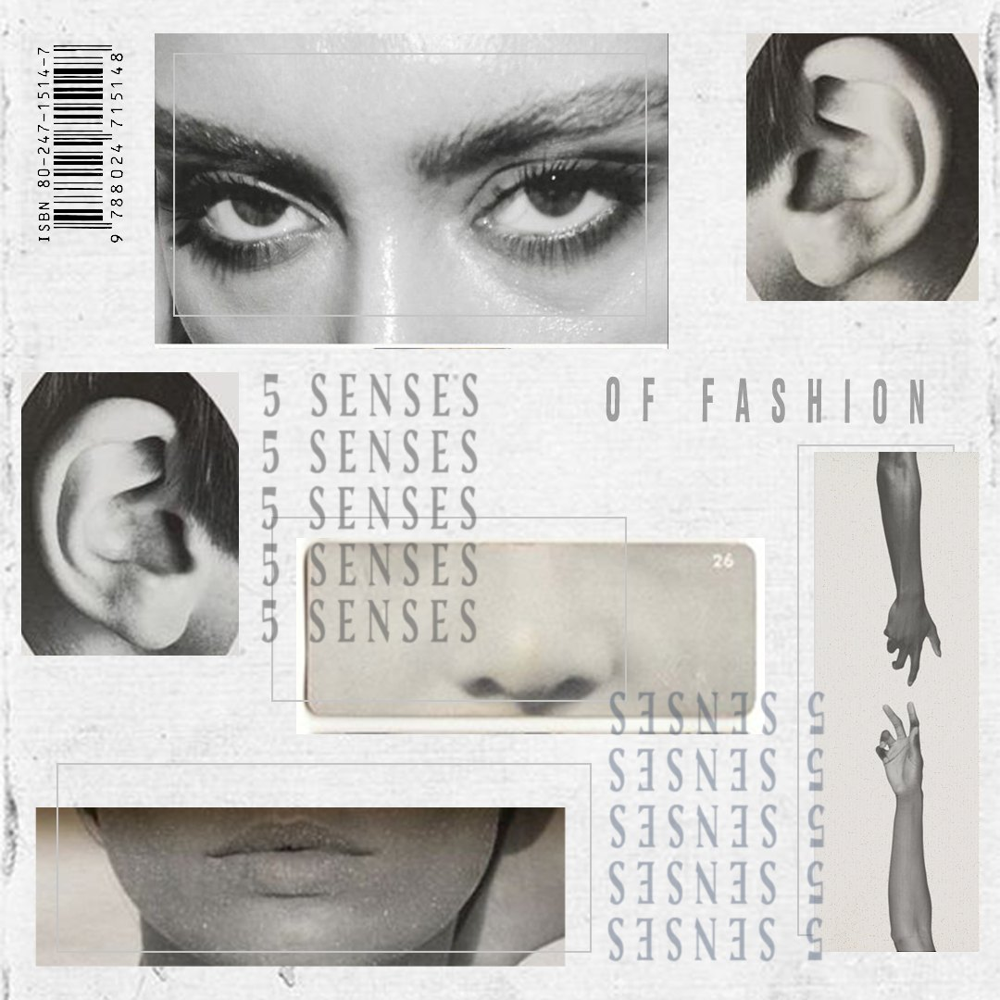
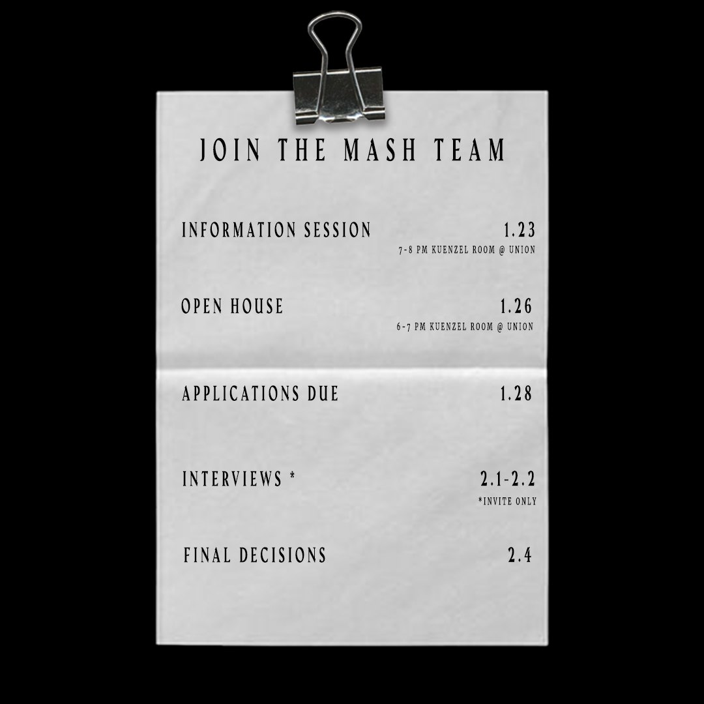
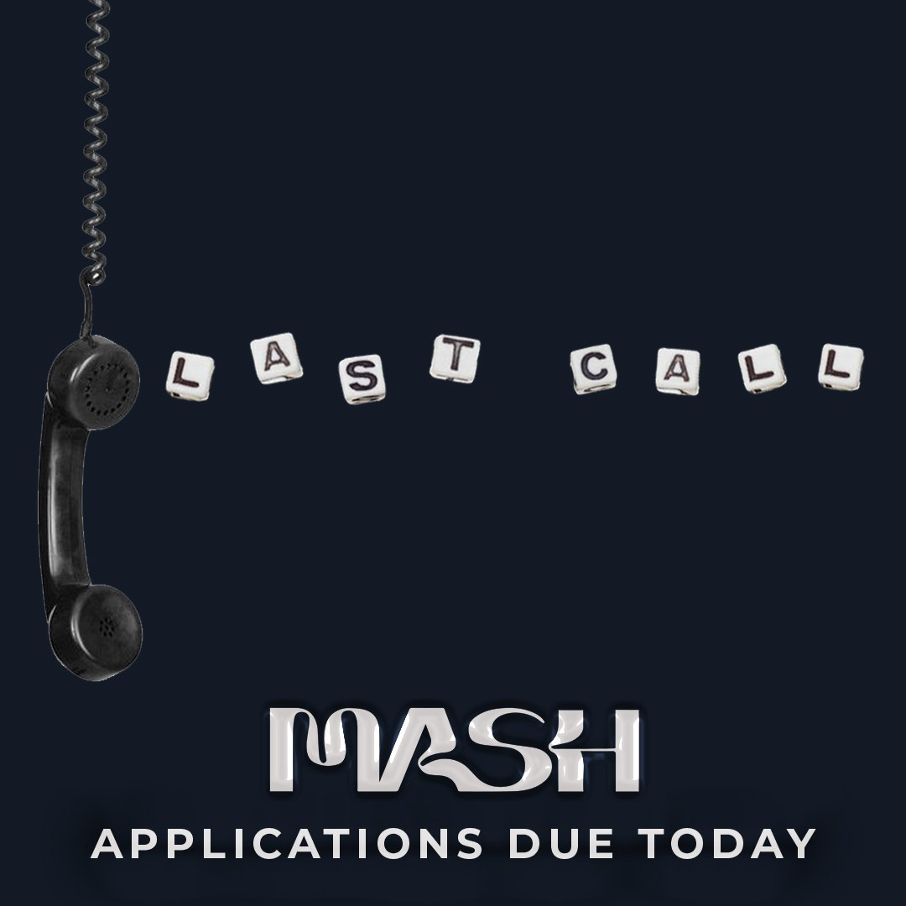
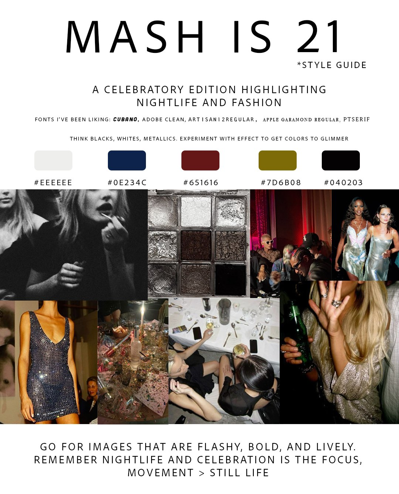

Creative Director · Dec 2023–Dec 2024

Mash Magazine is a digital publication of fresh perspectives at the intersection of business and fashion at the University of Michigan. As the VP of Creative, I led a team of 8 designers through content cycles, guiding the production of graphics, facilitating design critiques, and managing the team's deadlines to be in sync on a weekly posting schedule.




My responsibilities included curating style guides and producing social media content that carried the brand identity across feeds through layout, type, and image.
